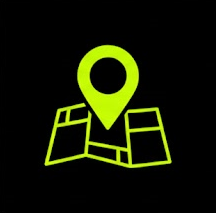

Mapeando o Problema, Criando a Solução
Use tecnologia para transformar dados em ação ambiental. Identifique e mapeie descarte indevido de lixo em sua cidade.
DETECÇÕES HOJE: 0
PONTOS MAPEADOS: 0
COLABORADORES: 0
DETECÇÕES HOJE: 0
PONTOS MAPEADOS: 0
COLABORADORES: 0
DETECÇÕES HOJE: 0
PONTOS MAPEADOS: 0
COLABORADORES: 0
DETECÇÕES HOJE: 0
PONTOS MAPEADOS: 0
COLABORADORES: 0
Como Funciona
Três passos simples para fazer a diferença em sua comunidade
1. Fotografe
Tire uma foto de lixo descartado inadequadamente usando seu smartphone.
2. Detecte
Nossa IA identifica automaticamente a presença de lixo na imagem.

3. Mapeie
O ponto é adicionado ao mapa para alertar autoridades e comunidade.